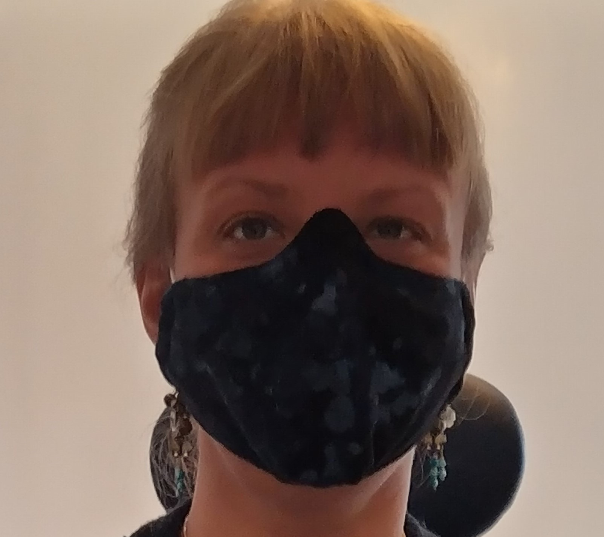
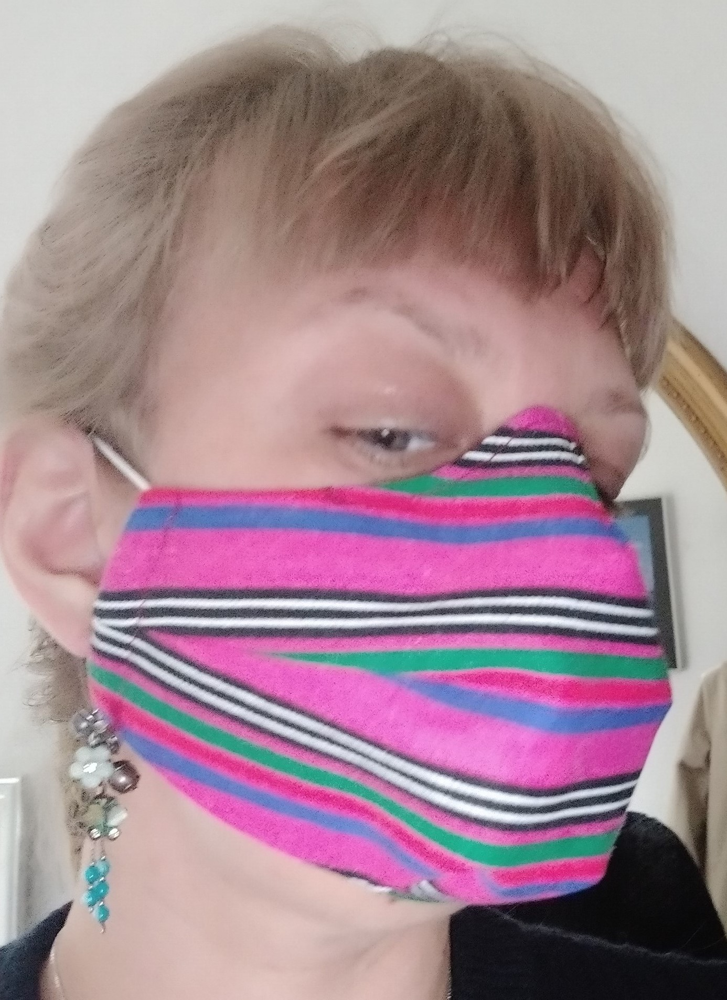
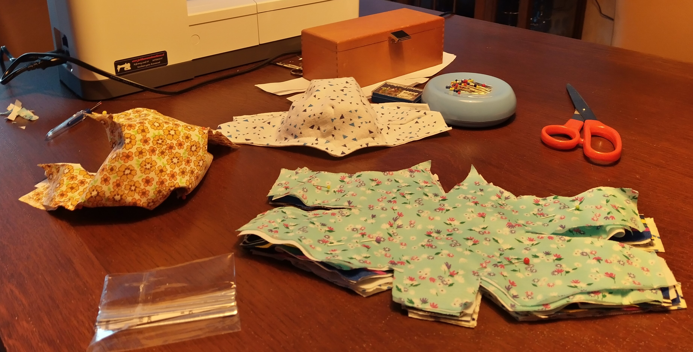
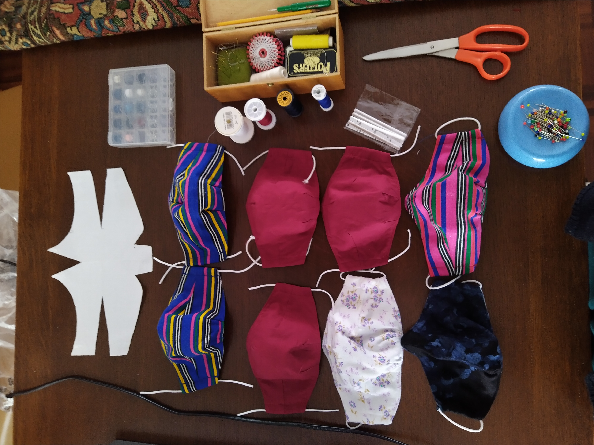

Onze mondkapjes zijn bijzonder.
Ze zijn niet alleen gemaakt van de beste kwaliteit materialen,
maar hebben ook nog eens een uitstekende pasvorm.
Door het 3D model ontstaat er ruimte rond je neus en mond waardoor je zuivere lucht kunt inademen,
in plaats van steeds de stof van je mondkapje tegen je aan te krijgen.
Dit maakt het model uitermate geschikt voor mensen die het wat sneller benauwd krijgen.
We gebruiken uitsluitend katoen (met soms een klein beetje elastaan) waardoor het ademen door deze mondkapjes
vele malen beter gaat dan bij een wegwerp mondkapje, of een herbruikbaar kapje van synthetische stof.
Toch sluit het mondkapje helemaal goed aan en is aan te passen met de metalen neusclip zodat je het kapje ook
rond je neus goed kunt afsluiten.Draag je een bril? Die past gewoon over je kapje heen,
waardoor ook nog eens je brillenglazen niet beslaan.


Duurzame Productie

Ook in Nederland gaan we de mondkapjes deze winter volop in het straatbeeld tegenkomen
en om iedereen van een mondkapje te voorzien, moeten er dus in korte tijd heel erg veel gemaakt worden.
Misschien maak jij je zorgen wat dat doet met het milieu,
die plotselinge productie van zoveel kleine lapjes stof?
Bij Huisvlijt werken we alleen met reststoffen.
Deze stoffen zijn dus nieuw en ongebruikt, maar zijn ‘overgebleven’ op de rol
en zouden normaal gesproken vernietigd worden,
nu gaan ze een nieuw leven tegemoet als mondkapje zonder dat daar ook maar één fabriek een dag extra
voor heeft moeten draaien. Onze mondkapjes zijn dus niet alleen stijlvol,
maar ook nog eens duurzaam geproduceerd.
De Huisvlijt Methode

Al onze mondkapjes bestaan uit 2 lagen, een buitenkant en een voering.
De stoffen zelf veranderen afhankelijk van wat we op voorraad hebben,
wacht dus niet te lang met kiezen als je een leuk mondkapje op onze website hebt gezien.
We maken de mondkapjes thuis op een gewone naaimachine,
we hebben geen personeel en niemand hoeft dus onnodig te reizen om de Huisvlijt mondkapjes te maken.
Zo dragen we bij Huisvlijt ook op die manier bij aan het inperken van het virus.
We zijn inmiddels erg bedreven in het maken van de mondkapjes
en in de regel zul je ze 3 dagen na je bestelling in huis hebben.
Orders van meer dan 15 kapjes duren een paar dagen langer.
Kijk snel op onze producten pagina welke mondkapjes je nu kunt bestellen.